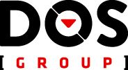
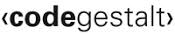
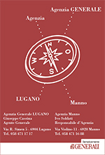
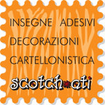
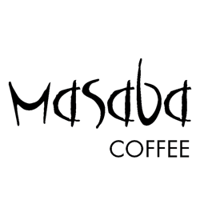

Rails Girls arriva in Ticino a Lugano!
Durante il workshop gratuito ci immergeremo nel magico mondo delle web app con Ruby on Rails.
ISCRIZIONI CHIUSE!!
Contattateci per qualsiasi domanda all'indirizzo railsgirlsticino@gmail.com.
Follow @RailsGirls_TI
Imparerai come progettare e programmare una web app con Ruby on Rails grazie all'aiuto dei nostri coaches.
Ti servirà il tuo laptop personale, tanta curiosità, allegria e tanta voglia di imparare insieme a noi! Per partecipare non è necessaria alcuna conoscenza di programmazione.
Vuoi aiutarci? Stiamo cercando Sponsor. Contattaci.
| 18.00 - 20:30 |
Installation partyUn party di benvenuto per conoscere tutte le partecipanti, i coaches e gli organizzatori. Porta il tuo laptop, così potremo installare Ruby insieme. |
|---|
| 9:00 - 09:30 |
ColazioneIniziamo la giornata con una buona colazione in compagnia delle partecipanti e dei coaches. |
|---|---|
| 09:30 - 10:00 |
WelcomeWelcome e presentazione della giornata. |
| 10:00 - 10:30 |
Speakers Talk: storie dal mondo femminile ITIntervento in sala di Micaela Terzi, Urbano Creativo. |
| 10:30 - 11:00 |
Coaches Talk: programming 101Presentazione del nostro coach Rodrigo Haenggi di Codegestalt. |
| 11:00 - 11:30 |
Introduzione a Ruby on RailsPresentazione del nostro team dedicata alle basi di R.O.R. |
| 11:30 - 12:00 |
Speakers Talk: SketchinIntervento in sala di Luca Mascaro o Francesca Di Mari, Sketchin |
| 12:00 - 13:30 | Pranzo |
| 13:30 - 14:30 |
WorkshopSviluppiamo la web application. |
| 14:30 - 14:45 |
Speakers Talk: storie dal mondo femminile IT, intro to Open Source and using Git/GithubIntervento in hangout di Alyson La, Accountant, Github |
| 14:45 - 15:30 |
WorkshopContinuiamo a lavorare sull'applicazione e a perfezionarla. |
| 15:30 - 15:45 |
Speakers Talk: storie dal mondo femminile ITIntervento di una sviluppatrice, programmatrice. |
| 16:00 |
Saluto in hangout di Linda Liukas da New YorkLinda Liukas, la fondatrice di Rails Girls porterà il suo saluto. |
| 16:15 - 17:00 |
Conclusione della giornataTerminiamo il workshop con conclusioni, discussione e domande. |
| 17:00 - open |
AfterpartyConcludiamo con una bella festa per i nostri partecipanti. |
Presentazioni |
Rails Girls Ticino - ItalianoRails Girls ItalianoRails Girls Ticino - EnglishRails Girls EnglishRails Girls Ticino - Programming 101Programming 101 by Rodrigo HaenggiRails Girls Ticino - UX laws - How to design a great user experienceUX laws - How to design a great user experience by Francesca Di Mari |
Quando: venerdì 28 marzo e sabato 29 marzo 2014
Iscrizioni: aperte su Eventbrite.
Trasporti: sarà organizzato un servizio di car sharing da Lugano centro e dalla Stazione FFS. Contattaci al più presto per permetterci di organizzare al meglio: railsgirlsticino@gmail.com
Location: SUPSI DTI, Sala Primavera
Via Galleria 2, 6928 Manno, Ticino
Come arrivare: con il nostro servizio di car sharing, dalla stazione FFS di Lugano/Lamone, dalla stazione FLP di Bioggio-Molinazzo. Oppure in automobile, sono presenti parcheggi.
Visualizzazione ingrandita della mappa
Rails Girls Ticino è possibile grazie ai nostri Sponsors e Partners.
Vuoi aiutarci? Stiamo cercando Sponsor. Contattaci!

DOS Group, soluzioni Informatiche a 360°. Il Valore della Competenza. DOS Group opera dal 2001 nel settore dell’Information Technology fornendo Tecnologie Hardware, Software, Servizi e Soluzioni ad alto contenuto tecnologico al mondo dell’Impresa ed al mondo domestico. DOS Group si presenta oggi come “Partner di riferimento" tra i più qualificati per la progettazione, l'implementazione e la manuntenzione di infrastrutture tecnologiche.
SUPSI DTI , il Dipartimento tecnologie innovative si occupa delle scienze dell'ingegneria in ambito applicato, in generale nel settore industriale, dei servizi tecnologici e informatici sia per quanto riguarda la formazione che per la ricerca.
Fondazione AGIRE è nata nel 2011 con l’obiettivo di sostenere lo sviluppo economico e industriale innovativo del Cantone Ticino e la creazione di posti di lavoro altamente qualificati. Si fonda su tre strumenti fondamentali: AGIRE Transfer, la piattaforma per il trasferimento di tecnologie e conoscenze tra industria e centri di ricerca, AGIRE Invest fondo di investimento a sostegno di imprese innovative sia nuove che già esistenti, e Tecnopolo Ticino, struttura nata per mettere a disposizione spazi dedicati ed aggregare aziende innovative.

Codegestalt is a small family of design and technology enthusiasts from Basel. We build bridges between people and create beautiful solutions. We believe that the only way to do great work is to be passionate about it. We are currently working on internal projects, but also offer consulting and development work.
Equus. A consulting firm enabling technological progress by transforming clients needs into innovative

GENERALI Assicurazioni una compagnia assicurativa dinamica con un organico di oltre 2'000 collaboratori, due sedi dislocate a Adliswil e Nyon nonché diverse agenzie in tutta la Svizzera. Il Gruppo è nato dall'unione di quattro compagnie di assicurazione svizzere, ovvero Union Suisse, Familia, Fortuna e Secura. Dal 1994 fa capo al gruppo assicurativo europeo Generali Assicurazioni S.p.A. con sede a Trieste (Italia), senza perdere tuttavia il suo carattere specifico di azienda svizzera.

GitHub is the best place to share code with friends, co-workers, classmates, and complete strangers. Over three million people use GitHub to build amazing things together.
KVALITO is a globally operating enterprise with headquarter in Basel (Switzerland). We deliver effective and efficient quality and compliance consulting services. KVALITO was founded with the aim to form a team of top talented and highly educated specialists who provide high quality service and support to companies facing quality challenges all over the world. The KVALITO team is specialized in business and IT processes in the regulated industry.

Scotchati, il team specializzato nello studio, la realizzazione ed il montaggio di tutto quello che riguarda la vostra immagine pubblicitaria.

Girl Geek Life è un magazine che parla di tecnologia, gadget, internet e tutto ciò che appassiona le girl geek italiane.

Masaba CoffeeMasaba aiuta i contadini in Uganda a produrre un caffè d’eccellenza, nel rispetto del commercio equo e dell’agricoltura biologica. Masaba helps small farmers in Uganda produce a coffee of excellence, in respect of fair trade and organic agriculture.
Tamaro Drinks SA C’era una volta parecchi anni fa, un giovane ragazzo di Sigirino, amante della natura, che saliva spesso ai monti per badare al bestiame. Durante le sue escursioni in montagna scoprì un luogo in cui il terreno risultava sempre umido, anche in tempi prolungati di siccità. Incuriosito da questo fenomeno decise di scavare in profondità. Trovò così la sorgente, la cui acqua risultava non solo buonissima da bere ma anche batteriologicamente pura. Per anni ed anni quest’uomo analizzò quest’acqua preziosa e gustosa sognando di poterla un giorno imbottigliare ed inviare in tutto il mondo. Il nome del prodigioso giovane era Carlo Moghini, che vide realizzare il sogno, con orgoglio, dal figlio Pio, in collaborazione con il resto della famiglia. Infatti, nel 1985, il sogno di Carlo diventò realtà. Dopo attente e minuziose ricerche il figlio Pio Moghini, intraprese l’avventura di imbottigliare l’acqua oligominerale che sgorga dalla sorgente che si trova in località Caslascio, sulle pendici del Monte Tamaro, a 12 km da Lugano. L’acqua oligominerale viene battezzata con il nome di SAN CLEMENTE I
Quanto costa il workshop? Niente, è completamente gratuito! Porta solo il tuo laptop e tanto entusiasmo!
A chi è rivolto? Donne di ogni età con un po' di pratica del computer.
Possono partecipare anche gli uomini? Si, ma solo se accompagnati da una donna interessata ad imparare. Diamo la priorità alle donne.
Vorrei essere uno sponsor dell'evento, come posso fare? Gli sponsor sono i benvenuti. Contattaci.
 Gabriella Fumagalli, responsabile progetto
@gabrivev
Federica Boffa, responsabile tecnico
@fede887
Riccardo Causo, responsabile coaches
@rixlabs
Luca Simone, responsabile coaches
@Lukefx
Gabriella Fumagalli, responsabile progetto
@gabrivev
Federica Boffa, responsabile tecnico
@fede887
Riccardo Causo, responsabile coaches
@rixlabs
Luca Simone, responsabile coaches
@Lukefx
Nadja Caverzasio, coach
@nadjazs
Valeria Demarta, coach
@ValeriaDemarta
Hissu Hyvärinen, coach
@HissuHyvarinen
Ju Liu,
coach
@arkh4m
Daniel Puglisi,
coach
@danielpuglisi
Rodrigo Haenggi,
coach
@therod
Francesco Agati,
coach
Vincenzo Acinapura,
coach